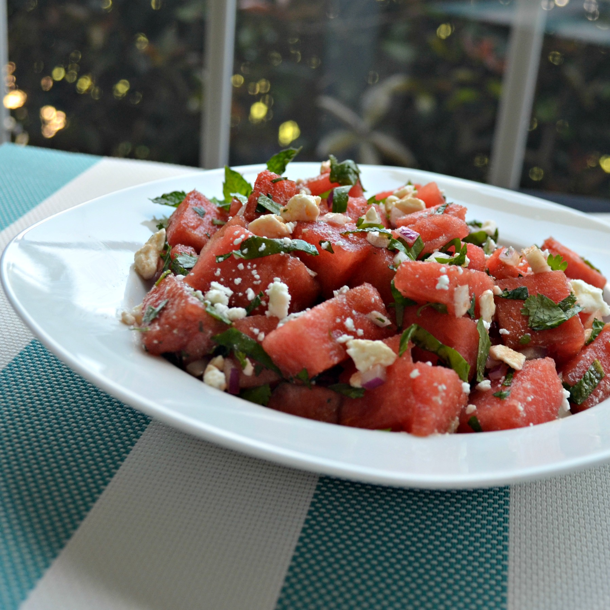

Home
Watermelon Salad

Description
This is a delicious summer salad. The ingredients really go well together.
Ingredients
- ½ large chilled seedless watermelon, cut into 1-inch cubes
- 1 small red onion, sliced
- 1 cup thinly sliced fresh basil leaves
- 1 cup chopped fresh cilantro
- ½ cup minced fresh mint leaves
- 2 limes, juiced
- 1 (4 ounce) package crumbled feta cheese
- 3 tablespoons olive oil
- 2 tablespoons balsamic vinegar, or more to taste
- salt and ground black pepper to taste
Directions
- Gently toss watermelon, onion, basil, cilantro, mint, lime juice, feta cheese, olive oil, balsamic vinegar, salt, and black pepper together in a large bowl.